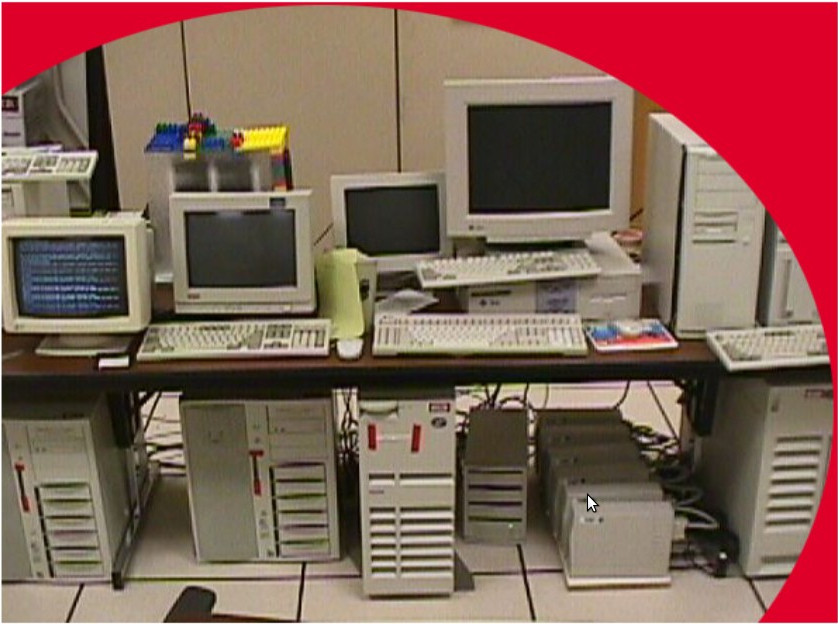

How Big is
 ?
?
Estimating the size of Big Data
Djoerd Hiemstra (@hiemstra@mastodon.utwente.nl)
Google's academic start


Sergey Brin and Lawrence Page (1998),
The Anatomy of a Large-Scale Hypertextual Web Search Engine,
In: Proceedings of the 7th International World Wide Web Conference.
Google 2019

Brin & Page 1998:
If we assume that Moore's law holds for the future, we need only 10 more doublings, or 15 years to reach our goal of indexing everything everyone in the US has written for a year (850 TB)
Hardware in 1997:

Jeff Dean (2009), Challenges in Building Large-Scale Information Retrieval Systems, In: Proceedings of WSDM
Brin & Page 1998:
The indexer ran just faster than the crawlers (...) Furthermore, the crawling, indexing, and sorting operations are efficient enough to be able to build an index of a substantial portion of the web — 24 million pages, in less than one week.
Brin & Page 1998:
With better encoding and compression of the Document Index, a high quality web search engine may fit onto a 7GB drive of a new PC.
Appendix A: Advertising and Mixed Motives
... we expect that advertising funded search engines will be inherently biased towards the advertisers and away from the needs of the consumers.
Appendix B: Scalability
Of course a distributed system like Gloss (...) will often be the most efficient and elegant technical solution for indexing, ...
Questions? 
/